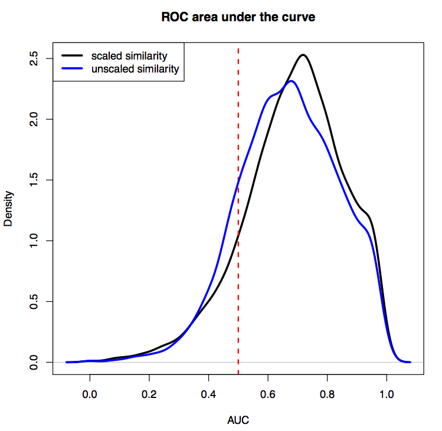

Omics Mining for the Illuminating the Druggable Genome Project
Methods: To predict functions for the under-studied kinases, GPCRs and ion channels, using RNA-seq data from GEO and SRA, an example is provided to show how biological processes from the gene ontology (GO) can be predicted. First, we processed all human and mouse RNA-seq samples currently (2/2017) available from GEO/SRA. Next, we calculated all pairwise gene correlations from the all the processed RNA-seq expression data. We then iterate over 5192 GO biological process terms where for each gene we calculated the average correlation with the genes in the gene set. The values are stored in a matrix C for all i genes and j biological processes. We then z-score normalized all the columns of C. Finally for each gene, we sorted the corresponding row of C, ranking terms based on the gene population z-score. Terms with high z-scores are predicted to be true annotations for the gene. To show the correctness of the term ranking, we calculated the area under the curve (AUC) from the ROC for all genes with existing annotations in GO. For GO biological processes, the average AUC for retrieving already annotated terms is 0.765.
Examples of GO annotations for the three under-studied kinase: PKMYT1, NEK4, PKN3; and the GPCR: ADGRD2
| PKMYT1 This gene encodes a member of the serine/threonine protein kinase family. The encoded protein is a membrane-associated kinase that was reported to negatively regulates the G2/M transition of the cell cycle by phosphorylating and inactivating cyclin-dependent kinase 1. The activity of the encoded protein is regulated by polo-like kinase 1. Alternatively spliced transcript variants encoding multiple isoforms have been observed for this gene. This kinase is listed as an under-studied kinase by IDG, and here we show the results of predicting its GO biological processes terms. | NEK4
NEK4 (NIMA Related Kinase 4) is a kinase known to be associated with Meckel Syndrome 1. It was reported that this kinase plays a role in sweet taste signaling. GO annotations related to this gene are few and include tyrosine kinase activity. This kinase is listed as an under-studied kinase by IDG, and here we show the results of predicting its GO biological processes terms. |
| PKN3
PKN3 (Protein Kinase N3) was reported to be a member of the Salmonella infection pathway (KEGG). GO annotations related to this gene include protein tyrosine kinase activity. This kinase is listed as an under-studied kinase by IDG, and here we show the results of predicting its GO biological processes terms. | ADGRD2
ADGRD2 (Adhesion G Protein-Coupled Receptor D2) is an under-studied G-protein coupled receptor. An important paralog of this gene is ADGRL1. This kinase is listed as an under-studied kinase by IDG, and here we show the results of predicting its GO biological processes terms. |